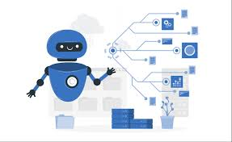

Emerging technology demands collaboration of two or more technologies to devise a merger that could benefit mankind.
Industrial revolutions brought smart solutions of collaborative nature.
That leads to inventions and the innovation taking over all the aspects now is Artificial Intelligence.
From satellites to ground stations, from agriculture to medical, from engineering to corporate sector, Each one demands introduction of AI to their fields.
Auto response is more close to human behaviour!!
Training AI based automatic response bots like chatGPT brought 180 degrees twist in interaction based communication.
It can generate any pice of desired text, art, visual and some bots also has the ability to reject any inappropriate query.
But that is not all!! There came Agentic AI, taking it one step ahead!!
Agentic AI is a combination of AI and autonomous technology..
These Agents require minimum human supervision as they have the ability to analyze data and decision making capabilities of their own..
These near human cognitions are achieved by using LLMs,ML,Deep learning and other brain usnpied sciences/engineering..
They are action-oriented!!
Looking at these developments, Being an Electrical Engineer and an entusiast AI student, I am working on developing skills on Agentic AI now !!